Mechanistic interpretability seeks to understand neural networks by breaking them into components that are more easily understood than the whole. By understanding the function of each component, and how they interact, we hope to be able to reason about the behavior of the entire network. The first step in that program is to identify the correct components to analyze.
Unfortunately, the most natural computational unit of the neural network – the neuron itself – turns out not to be a natural unit for human understanding. This is because many neurons are polysemantic: they respond to mixtures of seemingly unrelated inputs. In the vision model Inception v1, a single neuron responds to faces of cats and fronts of cars
One potential cause of polysemanticity is superposition
In Toy Models of Superposition, we described three strategies to finding a sparse and interpretable set of features if they are indeed hidden by superposition: (1) creating models without superposition, perhaps by encouraging activation sparsity; (2) using dictionary learning to find an overcomplete feature basis in a model exhibiting superposition; and (3) hybrid approaches relying on a combination of the two. Since the publication of that work, we've explored all three approaches. We eventually developed counterexamples which persuaded us that the sparse architectural approach (approach 1) was insufficient to prevent polysemanticity, and that standard dictionary learning methods (approach 2) had significant issues with overfitting.
In this paper, we use a weak dictionary learning algorithm called a sparse autoencoder to generate learned features from a trained model that offer a more monosemantic unit of analysis than the model's neurons themselves. Our approach here builds on a significant amount of prior work, especially in using dictionary learning and related methods on neural network activations (e.g.
The goal of this paper is to provide a detailed demonstration of a sparse autoencoder compellingly succeeding at the goals of extracting interpretable features from superposition and enabling basic circuit analysis. Concretely, we take a one-layer transformer with a 512-neuron MLP layer, and decompose the MLP activations into relatively interpretable features by training sparse autoencoders on MLP activations from 8 billion data points, with expansion factors ranging from 1× (512 features) to 256× (131,072 features). We focus our detailed interpretability analyses on the 4,096 features learned in one run we call A/1.
This report has four major sections. In Problem Setup, we provide motivation for our approach and describe the transformers and sparse autoencoders we train. In Detailed Investigations of Individual Features, we offer an existence proof – we make the case that several features we find are functionally specific causal units which don't correspond to neurons. In Global Analysis, we argue that the typical feature is interpretable and that they explain a non-trivial portion of the MLP layer. Finally, in Phenomenology we describe several properties of our features, including feature-splitting, universality, and how they can form "finite state automata"-like systems implementing interesting behaviors.
We also provide three comprehensive visualizations of features. First, for all features from 90 learned dictionaries we present activating dataset examples and downstream logit effects. We recommend the reader begin with the visualization of A/1. Second, we provide a data-oriented view, showing all features active on each token of 25 texts. Finally, we coembed all 4,096 features from A/1 and all 512 features from A/0 into the plane using UMAP to allow for interactive exploration of the space of features:
Summary of Results
- Sparse Autoencoders extract relatively monosemantic features. We provide four different lines of evidence: detailed investigations for a few features firing in specific contexts for which we can construct computational proxies, human analysis for a large random sample of features, automated interpretability analysis of activations for all the features learned by the autoencoder, and finally automated interpretability analysis of logit weights for all the features. Moreover, the last three analyses show that most learned features are interpretable. While we do not claim that our interpretations catch all aspects of features' behaviors, by constructing metrics of interpretability consistently for features and neurons, we quantitatively show their relative interpretability.
- Sparse autoencoders produce interpretable features that are effectively invisible in the neuron basis. We find features (e.g., one firing on Hebrew script) which are not active in any of the top dataset examples for any of the neurons.
- Sparse autoencoder features can be used to intervene on and steer transformer generation. For example, activating the base64 feature we study causes the model to generate base64 text, and activating the Arabic script feature we study produces Arabic text. (See discussion of pinned feature sampling in Global Analysis.)
- Sparse autoencoders produce relatively universal features. Sparse autoencoders applied to different transformer language models produce mostly similar features, more similar to one another than they are to their own model's neurons. (See Universality)
- Features appear to "split" as we increase autoencoder size. When we gradually increase the width of the autoencoder from 512 (the number of neurons) to over 131,000 (256×), we find features which naturally fit together into families. For example, one base64 feature in a small dictionary splits into three, with more subtle and yet still interpretable roles, in a larger dictionary. The different size autoencoders offer different "resolutions" for understanding the same object. (See Feature Splitting.)
- Just 512 neurons can represent tens of thousands of features. Despite the MLP layer being very small, we continue to find new features as we scale the sparse autoencoder.
- Features connect in "finite-state automata"-like systems that implement complex behaviors. For example, we find features that work together to generate valid HTML. (See "Finite State Automata".)
Problem Setup
A key challenge to our agenda of reverse engineering neural networks is the curse of dimensionality: as we study ever-larger models, the volume of the latent space representing the model's internal state that we need to interpret grows exponentially. We do not currently see a way to understand, search or enumerate such a space unless it can be decomposed into independent components, each of which we can understand on its own.
In certain limited cases, it is possible to side step these issues by rewriting neural networks in ways that don't make reference to certain hidden states. For example, in A Mathematical Framework for Transformer Circuits
In some sense, this is the simplest language model we profoundly don't understand. And so it makes a natural target for our paper. We aim to take its MLP activations – the activations we can't avoid needing to decompose – and decompose them into "features":
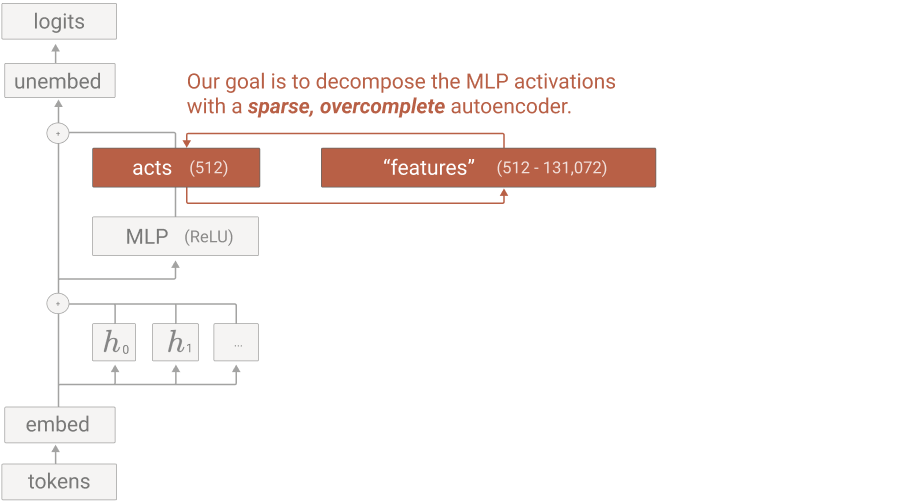
Crucially, we decompose into more features than there are neurons. This is because we believe that the MLP layer likely uses superposition
Transformer | Sparse Autoencoder | |
Layers | 1 Attention Block | 1 ReLU (up) |
MLP Size | 512 | 512 (1×) – 131,072 (256×) |
Dataset | The Pile | Transformer MLP Activations |
Loss | Autoregressive Log-Likelihood | L2 reconstruction |
In the following subsections, we will motivate this setup at more length. Additionally, a more detailed discussion of the architectural details and training of these models can be found in the appendix.
Features as a Decomposition
There is significant empirical evidence suggesting that neural networks have interpretable linear directions in activation space. This includes classic work by Mikolov et al.
If linear directions are interpretable, it's natural to think there's some "basic set" of meaningful directions which more complex directions can be created from. We call these directions features, and they're what we'd like to decompose models into. Sometimes, by happy circumstances, individual neurons appear to be these basic interpretable units (see examples above). But quite often, this isn't the case.
Instead, we decompose the activation vector
where
In our sparse autoencoder setup, the feature activations are the output of the encoder
where
If such a sparse decomposition exists, it raises an important question: are models in some fundamental sense composed of features or are features just a convenient post-hoc description? In this paper, we take an agnostic position, though our results on feature universality suggest that features have some existence beyond individual models.
Superposition Hypothesis
To see how this decomposition relates to superposition, recall that the superposition hypothesis postulates that neural networks “want to represent more features than they have neurons”. We think this happens via a kind of “noisy simulation”, where small neural networks exploit feature sparsity and properties of high-dimensional spaces to approximately simulate much larger much sparser neural networks

A consequence of this is that we should expect the feature directions to form an overcomplete basis. That is, our decomposition should have more directions
What makes a good decomposition?
Suppose that a dictionary exists such that the MLP activation of each datapoint is in fact well approximated by a sparse weighted sum of features as in equation 1. That decomposition will be useful for interpreting the neural network if:
- We can interpret the conditions under which each feature is active. That is, we have a description of which datapoints
j cause the feature to activate (i.e. for whichf_i(\mathbf{x}^j) is large) that makes sense on a diverse dataset (including potentially synthetic or off-distribution examples meant to test the hypothesis).This property is closely related to the desiderata of Causality, Generality, and Purity discussed in Cammarata et al. , and those provide an example of how we might make this property concrete in a specific instance. - We can interpret the downstream effects of each feature, i.e. the effect of changing the value of
f_i on subsequent layers. This should be consistent with the interpretation in (1). - The features explain a significant portion of the functionality of the MLP layer (as measured by the loss; see How much of the model does our interpretation explain?).
A feature decomposition satisfying these criteria would allow us to:
- Determine the contribution of a feature to the layer’s output, and the next layer’s activations, on a specific example.
- Monitor the network for the activation of a specific feature (see e.g. speculation about safety-relevant features).
- Change the behavior of the network in predictable ways by changing the values of some features. In multilayer models this could look like predictably influencing one layer by changing the feature activations in an earlier layer.
- Demonstrate that the network has learned certain properties of the data.
- Demonstrate that the network is using a given property of the data in producing its output on a specific example.
This is similar in spirit to the evidence provided by influence functions. - Design inputs meant to activate a given feature and elicit certain outputs.
Of course, decomposing models into components is just the beginning of the work of mechanistic interpretability! It provides a foothold on the inner workings of models, allowing us to start in earnest on the task of unraveling circuits and building a larger-scale understanding of models.
Why not use architectural approaches?
In Toy Models of Superposition
Initially, we thought that this might be possible but come with a large performance hit (i.e. produce models with greater loss). Even if this performance hit had been too large to use in practice for real models, we felt that success at creating monosemantic models would have been very useful for research, and in a lot of ways this felt like the "cleanest" approach for downstream analysis.
Unfortunately, having spent a significant amount of time investigating this approach, we have ultimately concluded that it is more fundamentally non-viable.
In particular, we made several attempts to induce activation sparsity during training to produce models without superposition, even to the point of training models with 1-hot activations. This indeed eliminates superposition, but it fails to result in cleanly-interpretable neurons! Specifically, we found that individual neurons can be polysemantic even in the absence of superposition. This is because in many cases models achieve lower loss by representing multiple features ambiguously (in a polysemantic neuron) than by representing a single feature unambiguously and ignoring the others.
To understand this, consider a toy model with a single neuron trained on a dataset with four mutually-exclusive features (A/B/C/D), each of which makes a distinct (correct) prediction for the next token, labeled in the same fashion. Further suppose that this neuron’s output is binary: it either fires or it doesn’t. When it fires, it produces an output vector representing the probabilities of the different possible next tokens.
We can calculate the cross-entropy loss achieved by this model in a few cases:
- Suppose the neuron only fires on feature A, and correctly predicts token A when it does. The model ignores all of the other features, predicting a uniform distribution over tokens B/C/D when feature A is not present. In this case the loss is
\frac{3}{4}\ln 3 \approx 0.8 . - Instead suppose that the neuron fires on both features A and B, predicting a uniform distribution over the A and B tokens. When the A and B features are not present, the model predicts a uniform distribution over the C and D tokens. In this case the loss is
\ln 2 \approx 0.7 .
Because the loss is lower in case (2) than in case (1), the model achieves better performance by making its sole neuron polysemantic, even though there is no superposition.
This example might initially seem uninteresting because it only involves one neuron, but it actually points at a general issue with highly sparse networks. If we push activation sparsity to its limit, only a single neuron will activate at a time. We can now consider that single neuron and the cases where it fires. As seen earlier, it can still be advantageous for that neuron to be polysemantic.
Based on this reasoning, and the results of our experiments, we believe that models trained on cross-entropy loss will generally prefer to represent more features polysemantically than to represent fewer "true features" monosemantically, even in cases where sparsity constraints make superposition impossible.
Models trained on other loss functions do not necessarily suffer this problem. For instance, models trained under mean squared error loss (MSE) may achieve the same loss for both polysemantic and monosemantic representations (e.g.
Note, however, that in learning to decompose models post-training we do use an MSE loss (between the activations and their representation in terms of the dictionary), so sparsity can inhibit superposition from forming in the learned dictionary. (Otherwise, we might have superposition "all the way down.")
Using Sparse Autoencoders To Find Good Decompositions
There is a long-standing hypothesis that many natural latent variables in the world are sparse (see
For this reason, we seek a decomposition which is sparse and overcomplete. This is essentially the problem of sparse dictionary learning
It's important to understand why making the problem overcomplete – which might initially sound like a trivial change – actually makes this setting very different from similar approaches seeking sparse disentanglement in the literature. It's closely connected to why dictionary learning is such a non-trivial operation; in fact, as we'll see, it's actually kind of miraculous that this is possible at all. At the heart of dictionary learning is an inner problem of computing the feature activations
Despite its difficulty, there are a host of sophisticated methods for dictionary learning (e.g.
Sparse Autoencoder Setup
We briefly overview the architecture and training of our sparse autoencoder here, and provide further details in Basic Autoencoder Training. Our sparse autoencoder is a model with a bias at the input, a linear layer with bias and ReLU for the encoder, and then another linear layer and bias for the decoder. In toy models we found that the bias terms were quite important to the autoencoder’s performance.
We train this autoencoder using the Adam optimizer to reconstruct the MLP activations of our transformer model, with an MSE
In training the autoencoder, we found a couple of principles to be quite important. First, scale really matters. We found that training the autoencoder on more data made features subjectively “sharper” and more interpretable. In the end, we decided to use 8 billion training points for the autoencoder (see Autoencoder Dataset).
Second, we found that over the course of training some neurons cease to activate, even across a large number of datapoints. We found that “resampling” these dead neurons during training gave better results by allowing the model to represent more features for a given autoencoder hidden layer dimension. Our resampling procedure is detailed in Neuron Resampling, but in brief we periodically check for neurons which have not fired in a significant number of steps and reset the encoder weights on the dead neurons to match data points that the autoencoder does not currently represent well.
For readers looking to apply this approach, we supply an appendix with Advice for Training Sparse Autoencoders.
How can we tell if the autoencoder is working?
Usually in machine learning we can quite easily tell if a method is working by looking at an easily-measured quantity like the test loss. We spent quite some time searching for an equivalent metric to guide our efforts here, and unfortunately have yet to find anything satisfactory.
We began by looking for an information-based metric, so that we could say in some sense that the best factorization is the one that minimizes the total information of the autoencoder and the data. Unfortunately, this total information did not generally correlate with subjective feature interpretability or activation sparsity. (Runs whose feature activations had an average L0 norm in the hundreds but low reconstruction error could have lower total information than those with smaller average L0 norm and higher reconstruction error.)
Thus we ended up using a combination of several additional metrics to guide our investigations:
- Manual inspection: Do the features seem interpretable?
- Feature density: we found that the number of “live” features and the percentage of tokens on which they fire to be an extremely useful guide. (See appendix for details.)
- Reconstruction loss: How well does the autoencoder reconstruct the MLP activations? Our goal is ultimately to explain the function of the MLP layer, so the MSE loss should be low.
- Toy models: Having toy models where we know the ground truth and so can cleanly evaluate the autoencoder’s performance was crucial to our early progress.
Interpreting or measuring some of these signals can be difficult, though. For instance, at various points we thought we saw features which at first didn’t make any sense, but with deeper inspection we could understand. Likewise, while we have identified some desiderata for the distribution of feature densities, there is much that we still do not understand and which prevents this from providing a clear signal of progress.
We think it would be very helpful if we could identify better metrics for dictionary learning solutions from sparse autoencoders trained on transformers.
The (one-layer) model we're studying
We chose to study a one-layer transformer model. We view this model as a testbed for dictionary learning, and in that role it brings three key advantages:
- Because one-layer models are small they likely have fewer "true features" than larger models, meaning features learned by smaller dictionaries might cover all their "true features". Smaller dictionaries are cheaper to train, allowing for fast hyperparameter optimization and experimentation.
- We can highly overtrain a one-layer transformer quite cheaply. We hypothesize that a very high number of training tokens may allow our model to learn cleaner representations in superposition.
- We can easily analyze the effects features have on the logit outputs, because these are approximately linear in the feature activations.
Note that this linear structure makes it even more likely that features should be linear. On the one hand, this means that the linear representation hypothesis is more likely to hold for this model. On the other hand, it potentially means that our results are less likely to generalize to multilayer models. Fortunately, others have studied multilayer transformers with sparse autoencoders and found interpretable linear features, which gives us more confidence that what we see in the one-layer model indeed generalizes This provides helpful corroboration that the features we have found are not just telling us about the data distribution, and actually reflect the functionality of the model..
We trained two one-layer transformers with the same hyperparameters and datasets, differing only in the random seed used for initialization. We then learned dictionaries of many different sizes on both transformers, using the same hyperparameters for each matched pair of dictionaries but training on the activations of different tokens for each transformer.
We refer to the main transformer we study in this paper as the “A” transformer. We primarily use the other transformer (“B”) to study feature universality, as we can e.g. compare features learned from the “A” and “B” transformers and see how similar they are.
Notation for Features
Throughout this draft, we'll use strings like "A/1/2357" to denote features. The first portion "A" or "B" denote which model the features come from. The second part (e.g. the "1" in "A/1") denotes the dictionary learning run. These vary in the number of learned factors and the L1 coefficient used. A table of all of our runs is available here. Notably, A/0…A/5 form a sequence with fixed L1 coefficients and increasing dictionary sizes. The final portion (e.g. the "2357" in "A/1/2357") corresponds to the specific feature in the run.
Sometimes, we want to denote neurons from the transformer rather than features learned by the sparse autoencoder. In this case, we use the notation "A/neurons/32".
Interface for Exploring Features
We provide an interface for exploring all the features in all our dictionary learning runs. Links to the visualizations for each run can be found here. We suggest beginning with the interface for A/1, which we discuss the most.
These interfaces provide extensive information on each feature. This includes examples of when they activate, what effect they have on the logits when they do, examples of how they affect the probability of tokens if the feature is ablated, and much more:

Our interface also allows users to search through features:
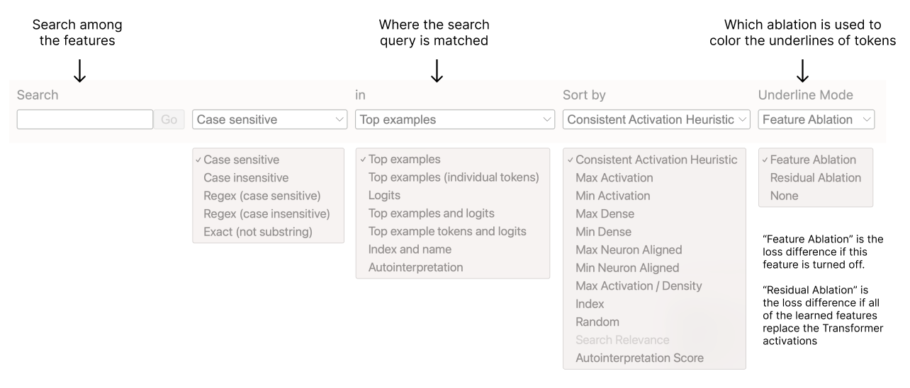
Additionally, we provide a second interface displaying all features active on a given dataset example. This is available for a set of example texts.
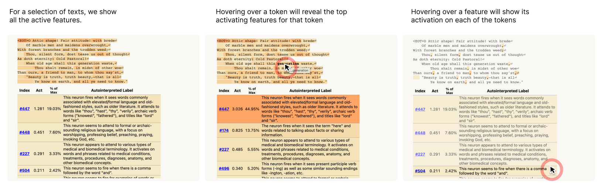
Detailed Investigations of Individual Features
The most important claim of our paper is that dictionary learning can extract features that are significantly more monosemantic than neurons. In this section, we give a detailed demonstration of this claim for a small number of features which activate in highly specific contexts.
The features we study respond to
- Text written in Arabic script (like "الكتاب المختصر في حساب الجبر والمقابلة")
- DNA sequences (like "CCTGGTACTGTACGAACGAACGAACGTAGCCTTGG")
- base64 strings (like the final characters in "https://www.youtube.com/watch?v=dQw4w9WgXcQ")
- Text written in Hebrew script (like "בראשית ברא אלהים את השמים ואת הארץ")
For each learned feature, we attempt to establish the following claims:
- The learned feature activates with high specificity for the hypothesized context. (When the feature is on the context is usually present.)
- The learned feature activates with high sensitivity for the hypothesized context. (When the context is present, the feature is usually on.)
- The learned feature causes appropriate downstream behavior.
- The learned feature does not correspond to any neuron.
- The learned feature is universal – a similar feature is found by dictionary learning applied to a different model.
To demonstrate claims 1–3, we devise computational proxies for each context, numerical scores estimating the (log-)likelihood that a string (or token) is from the specific context. The contexts chosen above are easy to model based on the defined sets of unicode characters involved. We model DNA sequences as random strings of characters from [ATCG] and we model base64 strings as random sequences of characters from [a-zA-Z0-9+/]. For Arabic script and Hebrew features, we exploit the fact that each language is written in a script consisting of well-defined Unicode blocks. Each computational proxy is then an estimate of the log-likelihood ratio of a string under the hypothesis versus under the full empirical distribution of the dataset. The full description of how we estimate
In this section we primarily study the learned feature which is most active in each context. There are typically other features that also model that context, and we find that rare “gaps” in the sensitivity of a main feature are often explained by the activity of another. We discuss this phenomenon in detail in sections on Activation Sensitivity and Feature Splitting.
We take pains to demonstrate the specificity of each feature, as we believe that to be more important for ruling out polysemanticity. Polysemanticity typically involves neurons activating for clearly unrelated concepts.

We finally note that the features in this section are cherry-picked to be easier to analyze. Defining simple computational proxies for most features we find, such as text concerning fantasy games, would be difficult, and we analyze them in other ways in the following section.
Arabic Script Feature
The first feature we'll consider is an Arabic Script feature, A/1/3450. It activates in response to text in Arabic, Farsi, Urdu (and possibly other languages), which use the Arabic script. This feature is quite specific and relatively sensitive to Arabic script, and effectively invisible if we view the model in terms of individual neurons.
Activation Specificity
Our first step is to show that this feature fires almost exclusively on text in Arabic script. We give each token an "Arabic script" score using an estimated likelihood ratio

We also show dataset examples demonstrating different levels of feature activity. In interpreting them, it's important to note that Arabic Unicode characters are often split into multiple tokens. For example, the character ث (U+062B) is tokenized as \xd8 followed by \xab.
The upper parts of the activation spectrum, above an activity of ~5, clearly respond with high specificity to Arabic script. What should we make of the lower portions? We have three hypotheses:
- The proxy is imperfect. It has false negatives due to common characters which are in other Unicode blocks (e.g., whitespace, punctuation), and also due to places where tokenization has created strange behavior.
For example, in the figure above, there is a newline character ⏎ that our feature fires on but our proxy assigns a low score to because it is outside the Unicode block. - The model may be imperfect (but still calibrated). If features activate proportional to their "confidence" that some property is present, then we should expect them to sometimes be wrong in their weak activations. Although it might seem silly to fail to recognize which language a piece of text is, this is a very weak one layer transformer model, and the fact that characters are often split into multiple tokens adds additional difficulty.
- The autoencoder may be imperfect: If the width of our autoencoder is less than the number of "true features" being used by the model, then unrecovered features may show up as low activations across many of our learned features.
Regardless, large feature activations have larger impacts on model predictions,
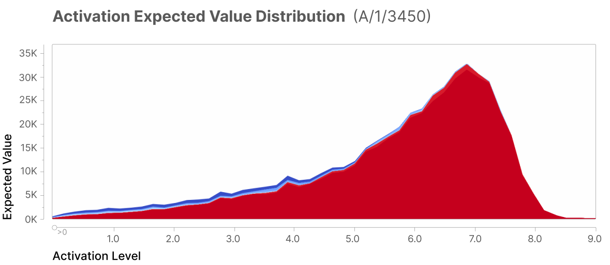
Activation Sensitivity
In the Feature Activation Distribution above, it's clear that A/1/3450 is not sensitive to all tokens in Arabic script. In the random dataset examples, it fails to fire on five examples of the prefix "ال", transliterated as "al-", which is the equivalent of the definite article "the" in English. However, in exactly those places, another feature which is specific to Arabic script, A/1/3134, fires. There are several additional features that fire on Arabic and related scripts (e.g. A/1/1466, A/1/3134, A/1/3399) which contribute to representing Arabic script. Another example deals with Unicode tokenization: when Arabic characters are split into multiple tokens, the feature we analyze here only activates at the final token comprising the character, while A/1/3399 activates on the first token comprising the character. To see how these features collaborate, we provide an alternative visualization showing all the features active on a snippet of Arabic text. We consider such interactions more in the Phenomenology section below.
Nevertheless, we find a Pearson correlation of 0.74 between the activity of our feature and the activity of the Arabic script proxy (thresholded at 0), over a dataset of 40 million tokens. Correlation provides a joint measure of sensitivity and specificity that takes magnitude into account, and 0.74 is a substantial correlation.
Feature Downstream Effects
Because the autoencoder is trained on model activations, the features it learns could in theory represent structure in the training data alone, without any relevance to the network’s function. We show instead that the learned features have interpretable causal effects on model outputs which make sense in light of the features’ activations. Note that these downstream effects are not inputs to the dictionary learning process, which only sees the activations of the MLP layer. If the resulting features also mediate important downstream behavioral effects then we can be confident that the feature is truly connected to the MLP’s functional role in the network and not just a property of the underlying data.
We begin with a linear approximation to the effect of each feature on the model logits. We compute the logit weight following the path expansion approach of
Each feature, when active, makes some output tokens more likely and some output tokens less likely. We plot that distribution of logit weights.\xd8 and \xd9, which are often the first half of the UTF-8 encodings of Arabic Unicode characters in the basic Arabic Unicode block).
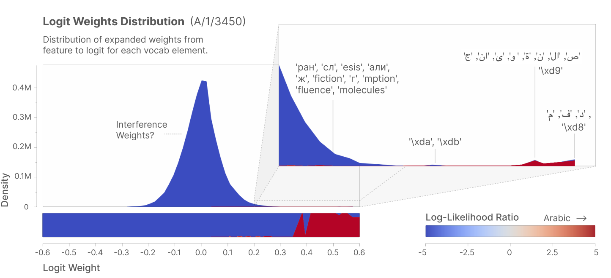
This suggests that activating this feature increases the probability the network predicts Arabic script tokens.
1. It could be that these output weights are small enough that, when multiplied by activations, they don't have an appreciable effect on the model’s output.
2. The feature might only activate in situations where other features make these tokens extremely unlikely, such that the feature in fact has little effect.
3. It is possible that our approximation of linearizing the layer norm (see Framework
Based on the subsequent analysis, which confirms the logit weight effects, we do not believe these issues arise in practice.
To visualize these effects on actual data, we causally ablate the feature. For a given dataset example, we run the context through the model until the MLP layer, decode the activations into features, then subtract off the activation of A/1/3450, artificially setting it to zero on the whole context, before applying the rest of the model. We visualize the effect of ablating the feature using underlines in the visualization; tokens whose predictions were helped by the feature (ablation decreased likelihood) are underlined in blue and tokens whose predictions were hurt by the feature (ablation increased likelihood) are underlined in red.
In the example on the right below we see that the A/1/3450 was active on every token in a short context (orange background). Ablating it hurt the predictions of all the tokens in Arabic script (purple underlines), but helped the prediction of the period . (orange underline). The rest of the figure displays contexts from two different ranges of feature activation levels. (The feature activation on the middle token of examples on the right ("subsample interval 5") is about half that of the middle token of examples on the left ("subsample interval 0")). We see that the feature was causally helping the model predictions on Arabic script through that full range, and the only tokens made less likely by the feature are punctuation shared with other scripts. The magnitudes of the impact are larger when the feature is more active.

We encourage interested readers to view the feature visualization for A/1 to review this and other effects.
We also validate that the feature's downstream effect is in line with our interpretation as an Arabic script feature by sampling from the model with the feature activity "pinned" at a high value. To do this, we start with a prefix 1,2,3,4,5,6,7,8,9,10 where the model has an expected continuation (keep in mind that this is a one layer model that is very weak!). We then instead set A/1/3450 to its maximum observed value and see how that changes the samples:

The feature is not a neuron
This feature seems rather monosemantic, but some models have relatively monosemantic neurons, and we want to check that dictionary learning didn't merely hand us a particularly nice neuron.
We then look at the coefficients of the feature in the neuron basis, and find that the three largest coefficients by magnitude are all negative (!) and there are a full 27 neurons whose coefficients are at least 0.1 in magnitude.

It is of course possible that these neurons engage in a delicate game of cancellation, resulting in one particular neuron's primary activations being sharpened. To check for this, we find the neuron whose activations are most correlated to the feature's activations over a set of ~40 million dataset examples.
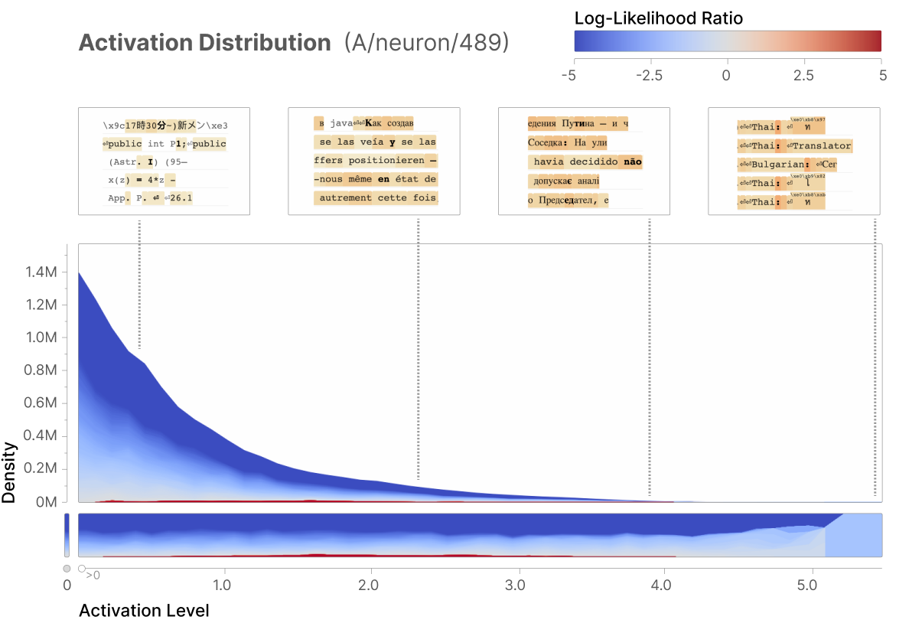
Logit weight analysis is also consistent with this neuron responding to a mixture of languages. For example, in the figure below many of the top logit weights appear to include Russian and Korean tokens. Careful readers will observe a thin red sliver corresponding to rare Arabic script tokens in the distribution. These Arabic script tokens have weight values that are very slightly positive leaning overall, but some are negative.

Finally, scatter plots and correlations suggest the similarities between A/1/3450 and the neuron are non-zero, but quite minimal.
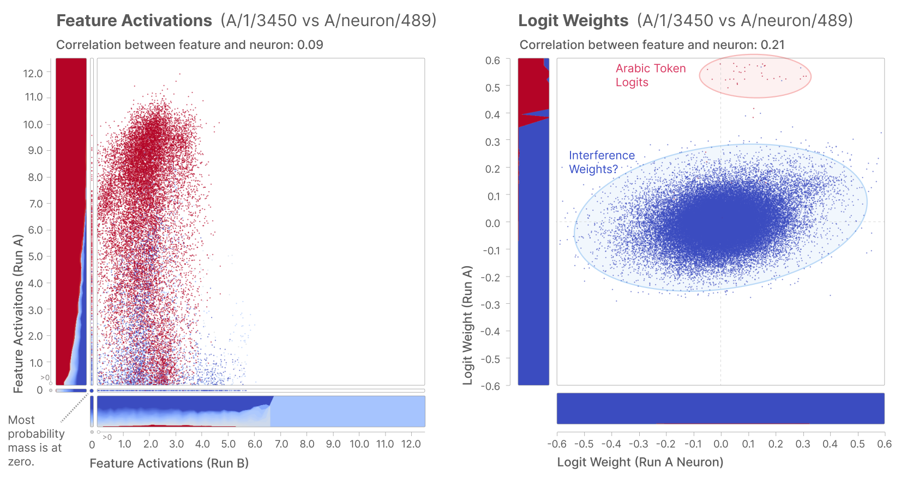
We conclude that the features we study do not trivially correspond to a single neuron. The Arabic script feature would be effectively invisible if we only analyzed the model in terms of neurons.
Universality
We will now ask whether A/1/3450 is a universal feature that forms in other models and can be consistently discovered by dictionary learning. This would indicate we are discovering something more general about how one-layer transformers learn representations of the dataset.
We search for a similar feature in B/1, a dictionary learning run on a transformer trained on the same dataset but with a different random seed. We search for the feature with the highest activation correlation
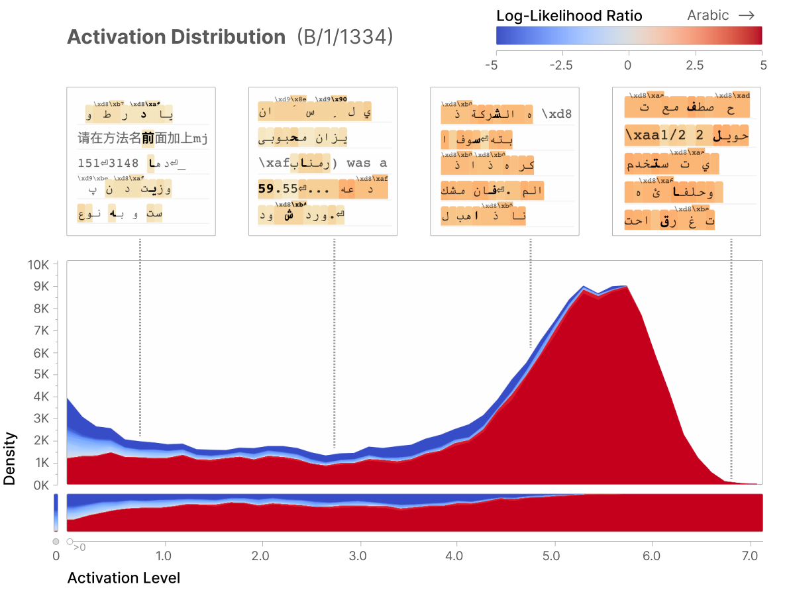
This feature clearly responds to Arabic script as well. If anything, it's nicer than our original feature – it's more specific in the 0–1 range. The logit weights tell a similar story:

The effects of ablating this feature are also consistent with this (see the visualization for B/1/1334).
To more systematically analyze the similarities between A and B, we look at scatter plots comparing the activations or logit weights:
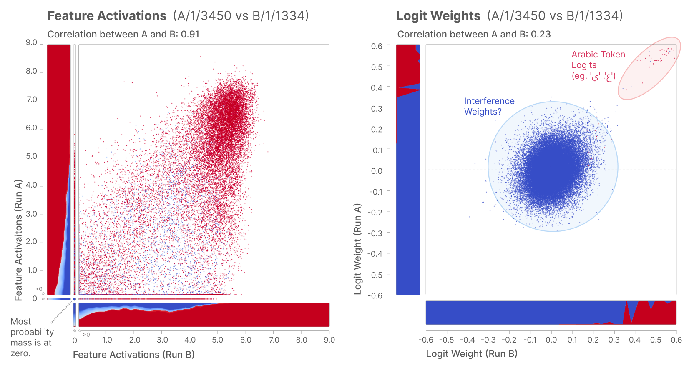
The activations are strongly correlated (Pearson correlation of 0.91), especially in the main Arabic mode.
The logit weights reveal a two-dimensional version of the bimodality we saw in the histogram for A/1, with logit weights for Arabic tokens clustering at the top right. The correlation is more modest than that of the activations because the distribution is dominated by a relatively uncorrelated mode in the center. We hypothesize this central mode corresponds to "weight interference" and that the shared outlier mode is the important observation – that is, the model may ideally prefer to have all those weights be zero, but due to superposition with other features and their weights, this isn't possible.
DNA Feature
We now consider a DNA feature, A/1/2937. It activates in response to long uppercase strings consisting of A, T, C, and G, typically used to represent nucleotide sequences. We closely follow the analysis of the Arabic script feature above to show activation specificity and sensitivity for the feature, sensible downstream effects, a lack of neuron alignment, and universality between models. The main differences will be that (1) A/1/2937 is the only feature devoted to modeling the DNA context, and (2) our proxy is less sensitive to DNA than our feature is, missing strings containing punctuation, spaces, and missing bases.
Activation Specificity and Sensitivity
We begin with the computational proxy for "is a DNA sequence", CAT, which could occur in DNA but also occur in other contexts, we always look at groups of at least two tokens when evaluating the proxy. The log-probabilities turn out to be quite bimodal, so we binarize the proxy (based on its sign). This binarized proxy then has a Pearson correlation of 0.8 with the feature activations.
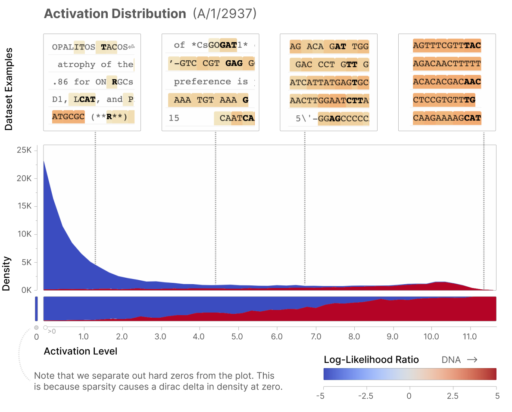
While the feature appears to be quite monosemantic in the feature's higher registers (all 10 random dataset examples above activation of 6.0 are DNA sequences), there is significant blue indicating the DNA proxy not firing in the lower registers. Below we show a grid of random examples at four activation levels (including feature off) where the proxy does and doesn't fire.

We note that in all but two cases where the feature and proxy disagree, the feature does indicate a DNA sequence, just one outside our proxy's strict ATCG vocabulary. For example, the space present in the triplets TGG AGT makes the proxy fail to fire. The feature also fires productively on '- in the string 5'-TCT, because what follows that prefix should be DNA, even though the prefix is not itself DNA. (The causal ablation reveals that turning off the DNA feature hurts the prediction of the strings that follow.) We thus believe that A/1/2937 is quite sensitive and specific for DNA. The case where the proxy fires and the feature does not is indeed a DNA sequence, though the feature begins firing on the very next token. We observe that the DNA feature may not fire on the first few tokens of a DNA sequence, but by the end of a long DNA sequence, it is the only feature active.
Feature Downstream Effect
The downstream effect of the DNA feature being active, as measured by logit weights, make sense, with all the top tokens being combinations of nucleotides like AGT and GCC.
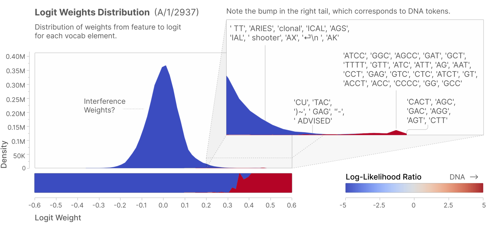
The Feature Is Not A Neuron
The most similar neuron to A/1/2937, as measured by activation correlation, is A/neurons/67. DNA contexts form a tiny sliver of that neuron's activating examples. The neuron whose coefficient is the highest in our feature's vector, A/neurons/227, also has no DNA sequences in its top activating examples.
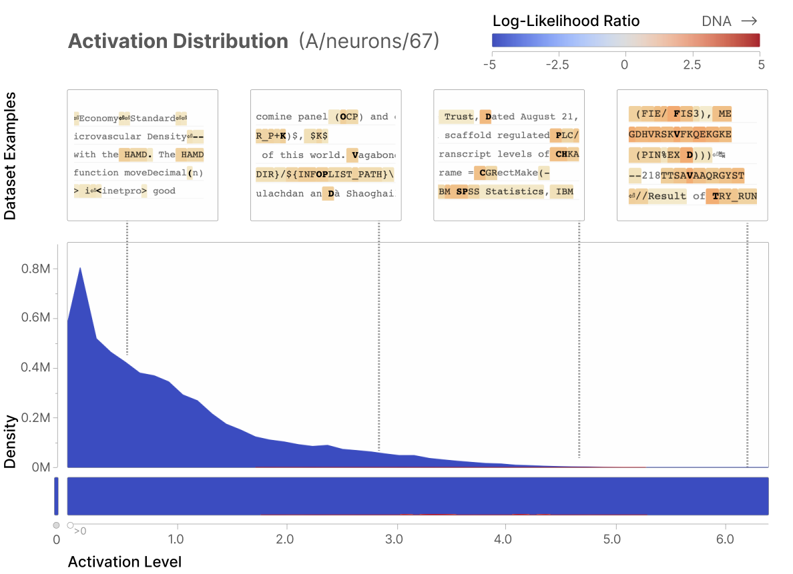
Universality
A/1/2937 has a correlated feature (corr=0.92) in run B/1, B/1/3680. Their top logit weights agree, and are DNA tokens (e.g. AGT) forming a separate mode (circled on the right) than the bulk of the logit weights for both.
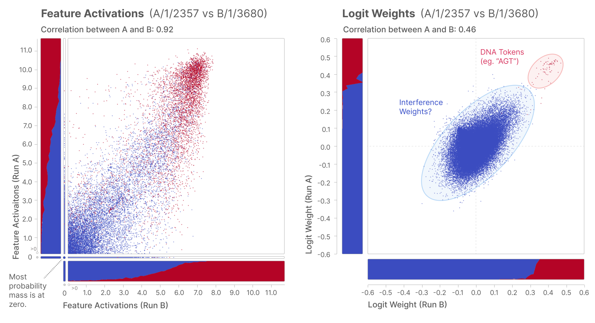
Base64 Feature
We now consider a base64 feature, A/1/2357. We're particularly excited by this feature because we discovered a base64 neuron in our SoLU paper [a-zA-Z0-9+/]. The activation distribution colored by the corresponding computational proxy, together with the random dataset examples from each activation level, shows that this feature is quite specific to base64.
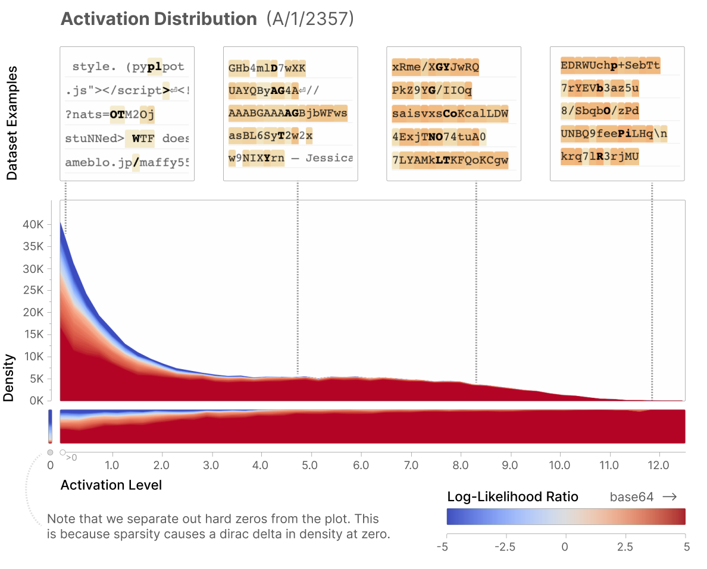
This is not the only feature active in base64 contexts, and in a section below we discuss the two others, one of which fires on single digits in base64 contexts (like the 2, 4, 7, and 9 on which A/1/2357 doesn't activate in the figure above), exploiting a property of the BPE tokenizer to make a better prediction.
Turning to the logit weights, they have a second mode consisting of highly base64-specific tokens. The main mode seems to primarily be interference, but the right side is skewed towards base64-neutral or slightly base64-leaning tokens. (If we look at the conditional below, we see a more continuous transition to base64-specific tokens.)

There is a more continuous transition between non-base64 and base64 tokens than we saw in the Arabic script example. This difference likely arises because whether a token occurs more in Arabic script than in other text is a relatively binary distinction, whereas whether a token occurs more in base64 or other text varies more continuously. For instance, fr is both a common abbreviation for the French language and also a base64 token, so it makes sense for the model to be cautious in up-weighting fr because it might already have a higher prior due to use in French. Indeed, any token consisting of letters from the English alphabet will have some nontrivial probability of appearing in base64 strings.
The Pearson correlation between the computational proxy and the activity of A/1/2357 is just 0.38. We believe that is mostly because the proxy is too broad. For example hexadecimal strings (those made of [0-9A-F]) activate the proxy, as they are quite different from the overall data distribution, but are actually predicted by a feature of their own, A/1/3817.
Universality
A/1/2357 has a correlated feature (corr=0.85) in run B/1, B/1/2165. It also has high activation specificity for base64 strings:

Like A/1/2357, B/1/2165's logit weights have a second mode corresponding to base64 tokens:
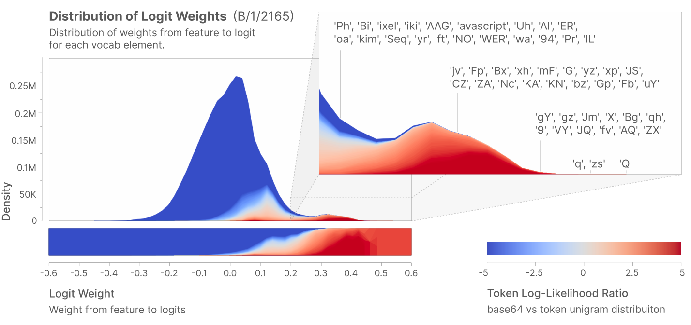
Correlations and scatter plots are also consistent with them being very similar features:
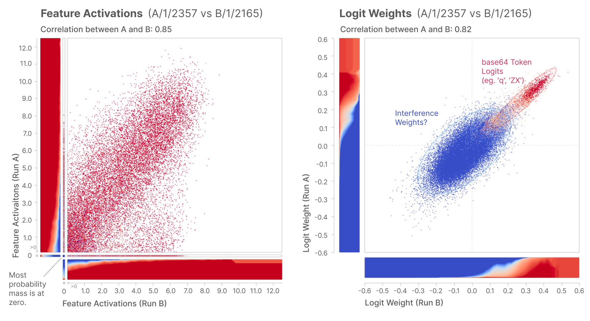
Note that we expect the overlap between the interference and base64 token logit weights to be from the aforementioned usage of base64 tokens across many other contexts.
The Feature Is Not A Neuron
Looking at the neuron in model A that most correlates with this feature: A/neurons/470 (corr=0.18), we find that while it does notably respond to base64 strings, it also activates for lots of other things, including code, HTML labels, parts of URLs, etc.:
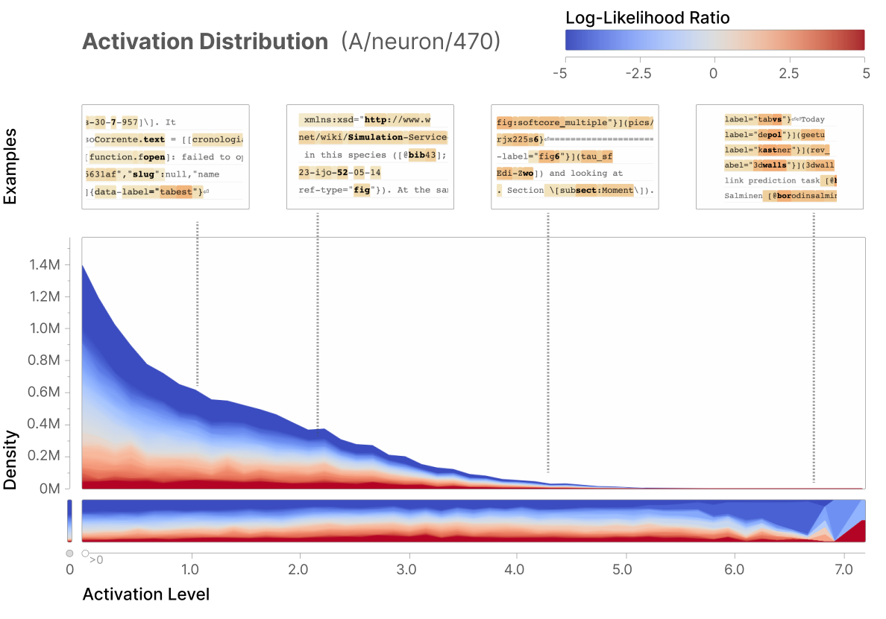
The logit weights suggest it somewhat increases base64 tokens, but is much more focused on upweighting other tokens, e.g. filename endings.
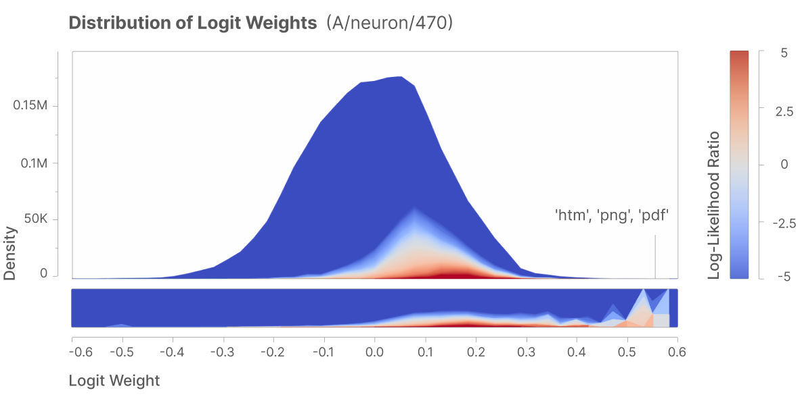
The activation and logit correlations are consistent with this neuron helping represent the same feature, but largely doing other things.
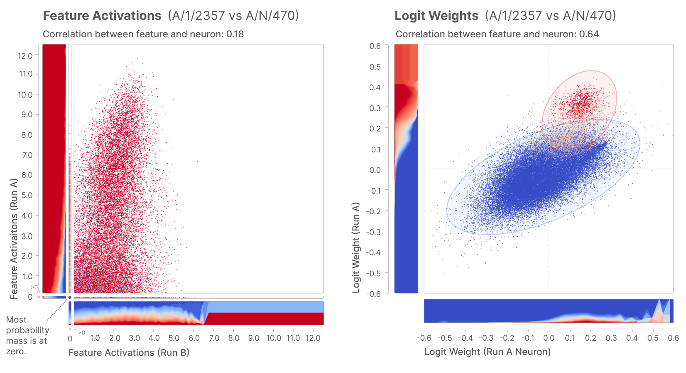
Hebrew Feature
Another interesting example is the Hebrew feature A/1/416. Like the Arabic feature, it's easy to computationally identify Hebrew text based on Unicode blocks.
A/1/416 has high activation specificity in the upper spectrum. It does weakly activate for other things (especially other languages with Unicode scripts). There is also some blue in strong activations; this appears to significantly be on "common characters", such as whitespace or punctuation, which are from other unicode blocks (see more discussion of similar issues in the Arabic feature section).
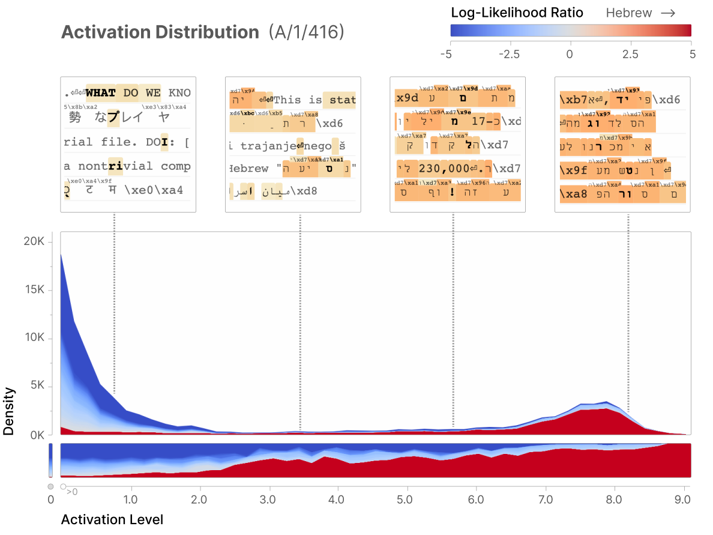
Its logit weights have a notable second mode, corresponding to Hebrew characters and relevant incomplete Unicode characters. Note that \xd7 is the first token in the UTF-8 encoding of most characters in the basic Hebrew Unicode block.
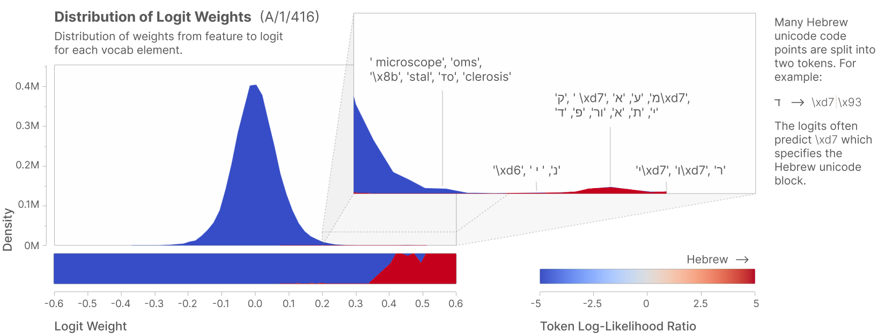
The Pearson correlation of the Hebrew script proxy with A/1/416 is 0.55. Some of the failure of sensitivity may be due to a complementary feature A/1/1016 that fires on \xd7 and predicts the bytes that complete Hebrew characters' codepoints.
The Feature Is Not A Neuron
There doesn't appear to be a similar neuron. The most correlated neuron in model A is A/neurons/489 (corr=0.1), which has low activation and logit specificity. Consider the following activation and logit correlation plots:
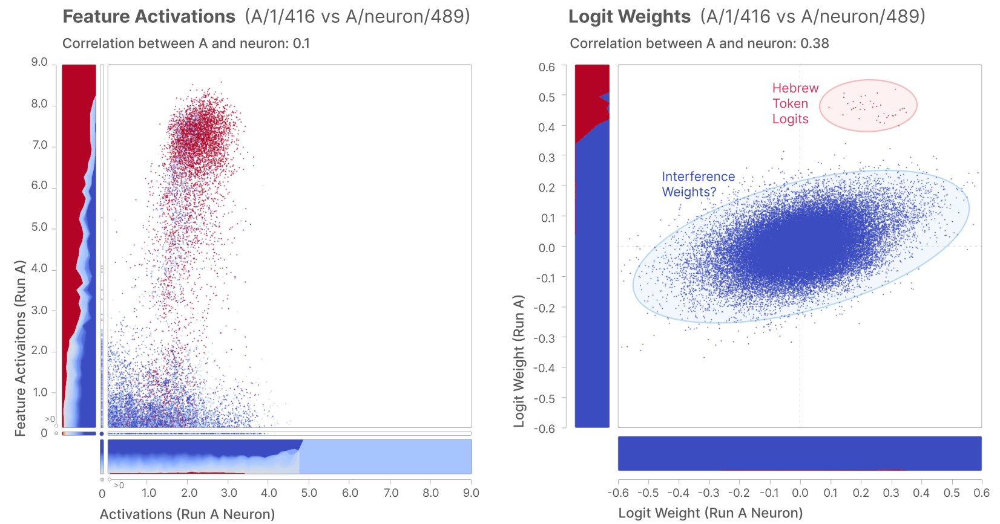
To cross-validate this, we also searched for any neuron where the main Hebrew Unicode block appeared in the top dataset examples. We found none.
Universality
A/1/416 has a correlated feature in the B/1 run, B/1/1901 (corr=0.92) that has significant activation specificity:
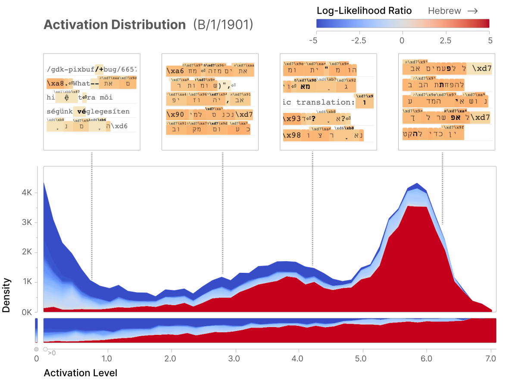
Logit weights have a second mode, as before:
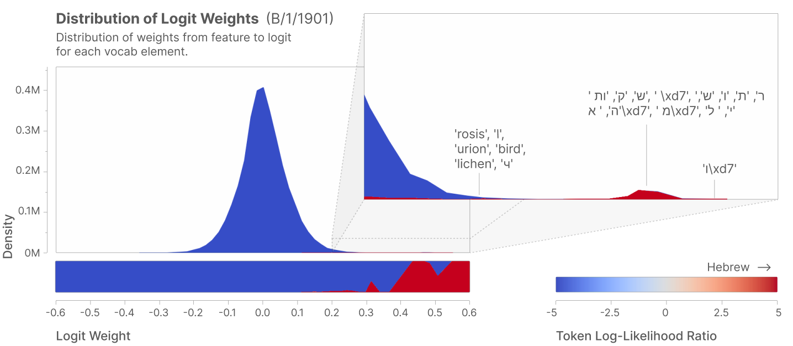
Activation and logit weight correlations are again consistent:
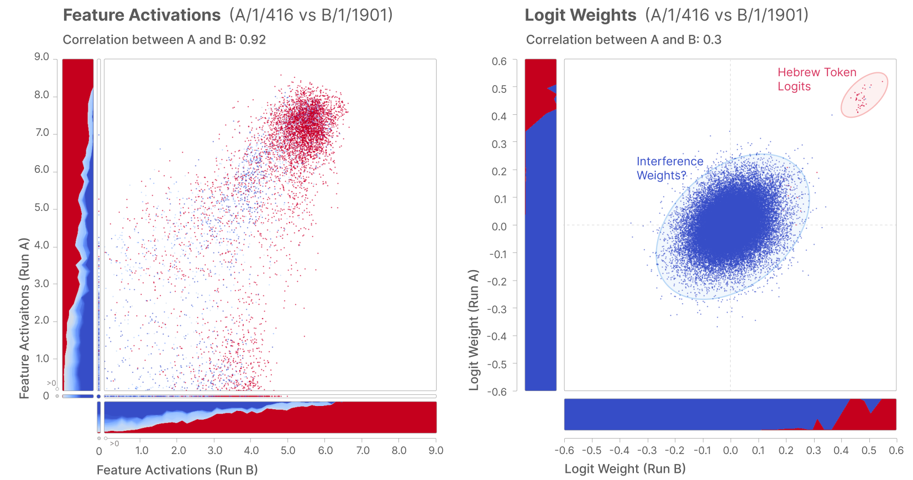
Global Analysis
If the previous section has persuaded you that at least some of the features are genuinely interpretable and reflect the underlying model mechanics, it's natural to wonder how broadly this holds outside of those cherry-picked features. The primary focus of this section will be to answer the question, "how interpretable are the rest of the features?" We show that both humans and large language models find our features to be significantly more interpretable than neurons, and quite interpretable in absolute terms.
There are a number of other questions one might also ask. To what extent is our dictionary learning method discovering all the features necessary to understand the MLP layer? Holistically, how much of the MLP layer's mechanics have been made interpretable? We are not yet able to fully answer these questions to our satisfaction, but will provide some preliminary speculation towards the end of this section.
We note that of the 4,096 learned features in the A/1 autoencoder, 168 of them are "dead" (active on none of the 100 million dataset examples) and 292 of them are "ultralow density", active on less than 1 in a million dataset examples and exhibiting other atypical properties. We exclude both these groups of features from further analyses.
How Interpretable is the Typical Feature?
In this section, we use three different methods to analyze how interpretable the typical feature is, and how that compares to neurons: human analysis, and two forms of automated interpretability. All three approaches find that features are much more interpretable than neurons.
Manual Human Analysis
At present, we do not have any metric we trust more than human judgment of interpretability. Thus, we had a blinded annotator (one of the authors, Adam Jermyn) score features and neurons based on how interpretable they are. The scoring rubric can be found in the appendix and accounts for confidence in an explanation, consistency of the activations with that explanation, consistency of the logit output weights with that explanation, and specificity.
In doing this evaluation, we wanted to avoid a weakness we perceived in our prior work (e.g.,
Unfortunately, this approach is labor intensive and so the number of scored samples is small. In total, 412 feature activation intervals were scored across 162 features and neurons.

We see that features are substantially more interpretable than neurons. Very subjectively, we found features to be quite interpretable if their rubric value was above 8. The median neuron scored 0 on our rubric, indicating that our annotator could not even form a hypothesis of what the neuron could represent! Whereas the median feature interval scored a 12, indicating that the annotator had a confident, specific, consistent hypothesis that made sense in terms of the logit output weights.
Automated Interpretability – Activations
To analyze features at a larger scale, we turned to automated interpretability
Like with the human analysis, we used samples across the full range of activation intervals to evaluate monosemanticity.
In agreement with the human analysis, Claude is able to explain and predict activations for features significantly better than for neurons.

Automated Interpretability – Logit Weights
In our earlier analysis of individual features, we found that looking at the logits is a powerful tool for cross-validating the interpretability of features. We can take this approach in automated interpretability as well. Using the explanations of features generated in the previous analysis, we ask a language model to predict if a previously unseen logit token is something the feature should predict as likely to come next. This is then scored against a 50/50 mix of top positive logit tokens and random other logit tokens. Randomly guessing would give a 50% accuracy, but the model instead achieves a 74% average across features, compared to a 58% average across neurons. Failures here refer to instances where Claude failed to reply in the correct format for scoring.

Activation Interval Analysis
In addition to studying features as a whole, in our manual analysis we can zoom in on portions of the feature activation spectrum using the feature intervals. As before, a feature interval is the set of examples with activations closest to a specific evenly-spaced fraction of the max activation. So, rather than asking if a feature seems interpretable, we ask whether a range of activations is consistent with the overall hypothesis suggested by the full spectrum of the feature’s activation. This allows us to ask how interpretability changes with feature activation strength.

Higher-activating feature intervals were more consistent with our interpretations than lower-activating ones. In particular:
- Many features show consistent activations across the entire activation spectrum.
- Some features show consistent activations across the top ~60% of the activation spectrum, and then quickly become less interpretable as we look to smaller and smaller activations.
It is possible that this is a sign that our features are not quite right. For instance, if one of our features is at a slight angle to the feature we’d really like to have learned, that can show up as inconsistent behavior in the lower activation intervals.
Caveats
Our manual and automated interpretability experiments have a few caveats:
- Feature activations are skewed towards the lower intervals. Most feature activations are quite small, and so fall in the lower (and less-interpretable) feature intervals. That said, as we found in our detailed analysis, most of the effect of a feature
with respect to the effect it has on the model outputs see e.g. the activation expected value plot in Arabic Feature's Activations Specificity Analysis. is due to its higher activations, which are quite interpretable. - The evaluated features are sampled uniformly from among the set of all features, and interpretability might be correlated with importance. One could imagine evaluating the features with the largest magnitude of activations, or the largest effect when ablated. Our sense is that these would be more interpretable than the randomly sampled features we considered. One could imagine a situation where the most important features in some sense were systematically less interpretable, though inspection of the most active features suggests the opposite.
Based on our inspection of many features in the visualization, we believe these caveats do not affect the experimental results. We encourage interested readers to open the visualization for A/1 and the corresponding neurons. You can sort by ‘random’ to get an unbiased sample and do your own version of the above experiment, or sort features by importance metrics such as max activation and max density to evaluate the final caveat above.
How much of the model does our interpretation explain?
We now turn to the question we're least able to answer – to what extent do these seemingly interpretable features represent the "full story" of the MLP? One could imagine posing this question in a variety of ways. What fraction of the MLP loss contribution have we made interpretable? How much model behavior can we understand? If there really are some discrete set of "true features", what fraction have we discovered?
One way to partly get at this question is to ask how much of the loss is explained by our features. For A/1, the run we've focused most on in this paper, 79% of the log-likelihood loss reduction provided by the MLP layer is recovered by our features. That is, the additional loss incurred by replacing the MLP activations with the autoencoder's output is just 21% of the loss that would be incurred by zero ablating the MLP. This loss penalty can be reduced by using more features, or using a lower L1 coefficient. As an extreme example, A/5 (n_learned_sparse=131,072, l1_coefficient=0.004) recovers 94.5% of log-likelihood loss.
These numbers should be taken with a significant grain of salt. The biggest issue is that framing this question in terms of fraction of loss may be misleading – we expect there to be a long-tail of features such that as the fraction of loss explained increases, more and more features are needed to explain the residual. Another issue is that we don't believe our features are completely monosemantic (some polysemanticity may be hiding in low activations), nor are all of them necessarily cleanly interpretable. With all of that said, our earlier analyses of individual features (e.g. the Arabic feature, base64 feature, etc.) do show that specific interpretable features are used by the model in interpretable ways – ablating them decreases probabilities in the appropriate way, and artificially activating them causes a corresponding behavior. This seems to confirm that the 79% of loss recovered is measuring something real, despite these caveats.
In principle, one could use automated interpretability to produce a better measure here: replacing activations with those predicted from explanations. (We believe others in the community have recently been considering this!) The naive versions of this would be quite computationally expensive,
Overall, we view the problem of measuring the degree to which a feature-based interpretation explains a model to be an important open question, where significant work is necessary on both defining metrics and finding efficient ways to compute them.
Do features tell us about the model or the data?
A model's activations reflect two things: the distribution of the dataset and the way that distribution is transformed by the model. Dictionary learning on activations thus mixes data and model properties, and intriguing properties of learned features may be attributed to either or both sources. Correlations in the data can persist after application of the first part of the model (up to the MLP), and it is in theory possible that the intriguing features we see are merely artifacts of dataset correlations projected into a different space. However, the use of those features by the second half of the model (MLP downprojection and unembedding) are not an input to dictionary learning, so the interpretability of the downstream effects of those features must be a property of the model.
To assess the effect of dataset correlations on the interpretability of feature activations, we run dictionary learning on a version of our one-layer model with random weights.
To assess the interpretability of the downstream feature effects, we again use the three main approaches of the previous section:
- Logit weight inspection. The logit weights represent the effect of each feature on the logits, and, as demonstrated in our earlier investigations of individual features, they are consistent with the feature activations for the base64, Arabic, and Hebrew features. The reader is invited to inspect logit weights for all features in the visualization.
- Feature ablation. We set the value of a feature to zero throughout a context, and record how the loss on each token changes. Ablations are available for all features in the visualization.
- Pinned feature sampling. We artificially pinned the value of a feature to a fixed high number and then sample from the model. We find that the generated text matches the interpretation of the feature.

The empirical consistency of feature activations with their downstream effects across all these metrics provides evidence that the features found are being used by the model.
Phenomenology
Ultimately, the goal of our work is to understand neural networks. Decomposition of models into features is simply a means to this end, and one might very reasonably wonder if it's genuinely advancing our overall goal. So, in this section, we'll turn attention to the lessons these features can teach us about neural networks. (We've taken to calling this work of leveraging our theoretical understanding to reason about model properties phenomenology by analogy to phenomenology in physics, and the 2019 ICML workshop on phenomena in deep learning.)
One way to do this would be to give a detailed discussion of the features we've found (similar to
We begin by discussing some basic motifs and observations about features. We'll then discuss how the features we relate compare to features in other dictionary learning runs and in other models. This will suggest that features are universal and that dictionary learning can be understood as a process of feature splitting that reflects something deep about the geometry of superposition. Finally, we'll explore how features connect together into "finite state automata" as systems that implement more complex behaviors.
Feature Motifs
What kinds of features do we find in our model?
One strong theme is the prevalence of context features (e.g. DNA, base64) and token-in-context features (e.g. the in mathematics – A/0/341, < in HTML – A/0/20).
Another interesting pattern is the implementation of what seem to be "trigram" features, such as a feature that predicts the 19 in COVID-19 (A/2/12310). Such features could in principle be implemented with attention alone, but in practice the model uses the MLP layer as well. We also see features which seem to respond to specific, longer sequences of tokens. These are particularly striking because they may implement "memorization" like behavior – we'll discuss this more later.
Finally, it's worth noting that all the features we find in a one-layer model can be interpreted as "action features" in addition to their role as "input features". For example, a base64 feature can be understood both as activating in response to base64 strings, and also as acting to increase the probability of base64 strings. The "action" view can clarify some of the token-in-context features: the feature A/0/341 predicts noun phrases in mathematical text, upweighting nouns like denominator and adjectives like latter. Consequently, while it activates most strongly on the, it also activates on adjectives like special and this which are also followed by noun phrases. This dual interpretation of features can be explored by browsing our interface. Several papers have previously explored interpreting neurons as actions (e.g.
Feature Splitting
One striking thing about the features we’ve found is that they appear in clusters. For instance, we observed above multiple base64 features, multiple Arabic script features, and so on. We see more of these features as we increase the total number of learned sparse features, a phenomenon we refer to as feature splitting. As we go from 512 features in A/0 to 4,096 features in A/1 and to 16,384 features in A/2, the number of features specific to base64 contexts goes from 1 to 3 to many more.
To understand how the geometry of the dictionary elements correspond to these qualitative clusters, we do a 2-D UMAP on the combined set of feature directions from A/0, A/1, and A/2.
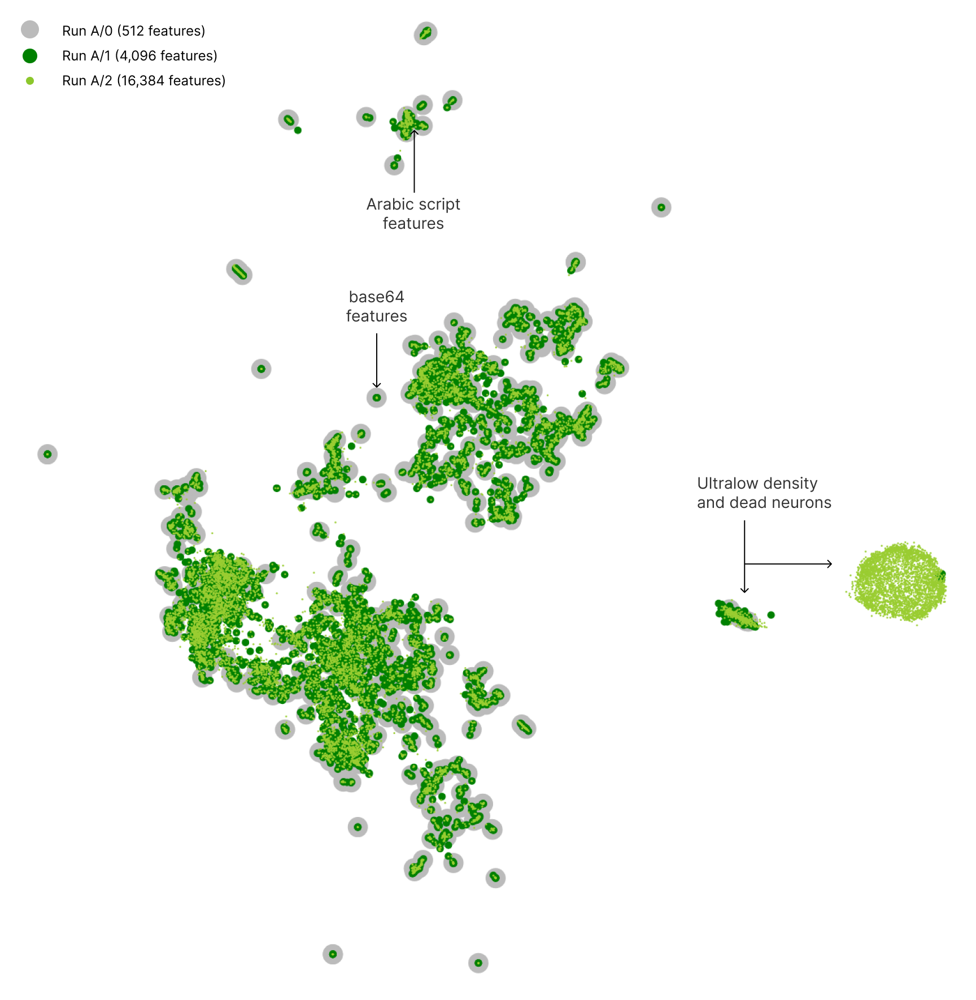
We see clusters corresponding to the base64 and Arabic script features, together with many other tight clusters from specific contexts and a variety of other interesting geometric structures for other features. This confirms that the qualitative clusters are reflected in the geometry of the dictionary: similar features have small angles between their dictionary vectors.

We conjecture that there is some idealized set of features that dictionary learning would return if we provided it with an unlimited dictionary size. Often, these "true features" are clustered into sets of similar features, which the model puts in very tight superposition. Because the number of features is restricted, dictionary learning instead returns features which cover approximately the same territory as the idealized features, at the cost of being somewhat less specific.
In this picture, the reason the dictionary vectors of conceptually similar features are similar is that they are likely to produce similar behaviors in the model, and so should be responsible for similar effects in the neuron activations. For instance, it would be natural for a feature that fires on periods to predict tokens with a leading space followed by a capital letter. If there are multiple features that fire on periods, perhaps on periods in somewhat different contexts, these might all predict tokens with a leading space, and those predictions might well involve producing similar neuron activations. The combination of features being highly correlated and having similar "output actions", causes real models to have both denser and more structured superposition than what we observed in our previous toy models work
If this picture is true, it would be important for a number of reasons. It suggests that determining the "correct number of features" for dictionary learning is less important than it might initially seem. It also suggests that dictionary learning with fewer features can provide a "summary" of model features, which might be very important in studying large models. Additionally, it would explain some of the stranger features we observe in the process of dictionary learning, suggesting that these are either "collapsed" features which would make sense if split further (see "Bug" 1: Single Token Features), or else highly-specific "split" features which do in fact make sense if analyzed closely (see "Bug" 2: Multiple Features for a Single Context). Finally, it suggests that our basic theory of superposition in toy models is missing an important dimension of the problem by not adequately studying highly correlated and "action sharing" features.
Example: Mathematics and Physics Features
In this example, our coarsest run (with 512 learned sparse features) has three features describing tokens in different technical settings. Using the masked cosine similarity
What we see is that the finer runs reveal more fine-grained distinctions between e.g. concepts in technical writing, and distinguish between the articles the and a, which are followed by slightly different sets of noun phrases. We also see that the structure of this refinement is more complex than a tree: rather, the features we find at one level may both split and merge to form refined features at the next. In general though, we see that runs with more learned sparse features tend to be more specific than those with fewer.

It's worth noting that these more precise features reflect differences in model predictions as well as activations. The general the in mathematical prose feature (A/0/341) has highly generic mathematical tokens for its top positive logits (e.g. supporting the denominator, the remainder, the theorem), whereas the more finely split machine learning version (A/2/15021) has much more specific topical predictions (e.g. the dataset, the classifier). Likewise, our abstract algebra and topology feature (A/2/4878) supports the quotient and the subgroup, and the gravitation and field theory feature (A/2/2609) supports the gauge, the Lagrangian, and the spacetime.
Features which seemed like Bugs
"Bug" 1: Single-Token FeaturesWhen we limit dictionary learning to use very few learned sparse features, the features that emerge sometimes look quite strange. In particular, there are a large number of high-activation magnitude features which each only fire on a single token, and which seem to fire on every instance of that token. Such features are strange because the model could achieve the same effect entirely by learning different bigram statistics, and so should have no reason to devote MLP capacity to these. Similar features were also recently observed in a report by Smith
We believe that feature splitting explains this phenomenon: the model hasn’t learned a single feature firing on the letter P,[ P][attern].P in different contextsP features by manual inspection rather than by cosine similarity.P features that fire in different contexts.

We also observed the converse, where multiple features seemed to cover roughly the same concept or context. For example, there were three features in A/1 which fired on (subsets of) base64 strings, and predicted plausible base64 tokens like zf, mF, and Gp. One of these features was discussed in detail earlier, where we showed it fired for base64 strings. But we also observed that it didn't fire for all base64 strings – why? And what are the other two features doing? Why are there three?
In A/0 (with 512 features), the story is simple. There is only one base64-related feature, A/0/45, which seems to activate on all tokens of base64-encoded strings. But in A/1, that feature splits into three different features whose activations seem to jointly cover those of A/0/45:

Two of these features seem relatively straightforward. A/1/2357 seems to fire preferentially on letters in base64, while A/1/2364 seems to fire preferentially on digits.
Comparing the logit weights of these features reveals that they predict largely the same sets of tokens, with one significant difference: the feature that fires on digits has much lower logit weights for predicting digits. Put another way, if the present token is made of digits, the model will predict that the next token is a non-digit base64 token.

We believe this is likely an artifact of tokenization! If a single digit were followed by another digit, they would have been tokenized together as a single token; [Bq][8][9][mp] would never occur, as it would be tokenized instead as [Bq][89][mp]. Thus even in a random base64 string, the fact that the current token is a single digit gives information about the next token.
But what about the third feature, A/1/1544? At first glance, there isn't an obvious rule for when it fires. But if we look more closely, we notice that it seems to respond to base64 strings which encode ASCII text.ICAgICAg which this feature particularly responds to, and corresponds to six spaces in a row.

This pattern of investigation, where one looks at coarser sets of features to understand categories of model behavior, and then at more refined sets of features to investigate the subtleties of that behavior, may prove well adapted to larger models where the feature set is expected to be quite large.
It's also worth noting how dictionary learning features were able to surprise us here. Many approaches to interpretability are top-down, and look for things we expect. But who would have known that models not only have a base64 feature, but that they distinguish between distinct kinds of base64 strings? This reminds us of cases like high-low frequency detectors
Universality
One of the biggest "meta questions" about features is whether they're universal
Earlier, we saw that all the features we performed detailed analyses of (e.g. the Arabic feature, or base64 feature) were universal between two one-layer models. But is this true for typical features in our model? And how broadly is it true – do we only observe the same feature if we train models of the same architectures on the same dataset, or do these features also occur in more divergent models? This section will seek to address these two questions. The first subsection will quantitatively analyze how widespread universality is between the two one-layer models we studied, while the second will compare the features we find to others reported in the literature in search of a stronger form of universality.
We observe substantial universality of both types.
Comparing features between two one-layer transformers
To compare features from different models, we need model-independent ways to represent a feature.
One natural approach is to think of a feature as a function assigning values to datapoints; two features would be similar in this sense if they take similar values over a diverse set of data. This general approach has been explored by a number of prior papers (e.g.
A second natural approach is to think of a feature in terms of its downstream effects; two features would be similar in this sense if their activation changes their models' predictions in similar ways. In our one-layer model, a simple approximation to this is the logit weights. This approximation represents each feature as a vector with indices corresponding to vocabulary tokens. We call the correlations between these vectors the logit weight similarity between features.
These two notions of similarity correspond to the correlations of the points in the two scatter plots we used when analyzing individual features earlier. We've reproduced the plots for the Arabic feature below:

For each feature in run A/1, we find the closest feature by activation similarity in run B/1, which is a different dictionary learning run trained on different activations from a different transformer with different random seeds but otherwise identical hyperparameters. We find that many features are highly similar between models, with features in A/1 having a median activation correlation of 0.72 with the most similar feature from B/1. (We perform the same analysis finding the closest neurons between the transformers, and find significantly less similarity, with median activation correlation 0.46.) The features with low activation correlation between models may represent different "feature splittings" in the dictionaries learned or different "true features" learned by the base models.

A natural next question is whether features that fire on the same tokens also have the same logit effects. That is, how well do activation similarity and logit weight similarity agree?
Some gap between the two is visible for the Arabic feature above: the "important tokens" for the features' effects (the ones in Arabic script) are upweighted by features from both models, but there is a large cloud of tokens with smaller effects that appear to almost be isotropic noise, resulting in a logit weight correlation of just 0.23, significantly below the activation correlation of 0.91.
In the scatterplot below, we find that this kind of disagreement is widespread.
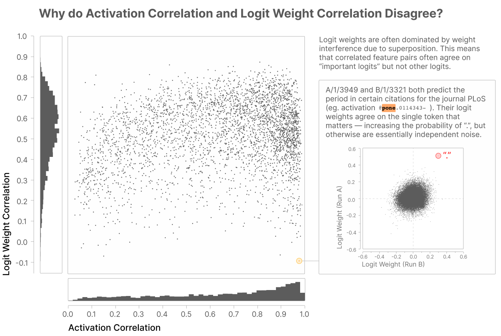
The most dramatic example of this disparity is for the features A/1/3949 and B/1/3321, with an activation correlation of 0.98 but a negative logit weight correlation. These features fire on pone (and occasionally on pgen and pcbi) as abbreviations for the journal name PLOSOne in citations, like @pone.0082392, and predict the . that follows.
Zooming in on the logit weight scatterplot (inset in the figure above), we see that only the . token has high logit weight in both models, and that every other token is in the 'interference' portion of the logit weight distribution. Indeed, the model may simply not care about what the feature does to tokens which were already implausible because they are suppressed by the direct path, attention layer, or other features of the MLP.
We want to measure something more like "the actual effect a feature has on token probabilities." One way to get at this would be to compute a vector of ablation effects for every feature on every data point; pairs of features whose ablations hurt the model's predictions on the same tokens must have been predicting the same thing. Unfortunately, this would be rather expensive computationally. Instead, we scale the activation vector of a feature by the logit weights of the tokens that empirically come next in the dataset to produce an attribution vector.

In light of this, we feel that the activation correlation used throughout the paper is in fact a good proxy for both notions of universality in the context of our one-layer models.
Comparing features with the literature
So far, we've established that many of our features are universal in a limited sense. Features found in one of our transformers can also be found in an alternative version trained with a different random seed. But this second model has an identical architecture and was trained on identical data. This is the most minimal version of universality one could hope for. Despite this, we believe that many of the features we've found are universal in a deeper sense, because very similar features have been reported in the literature before.
The first comparison which struck us is that many features seem quite similar to neurons we previously found in one-layer SoLU models, which use an activation function designed to make neurons more monosemantic
We also find many features similar to Smith
At a more abstract level, many features we find seem similar to features reported in multimodal models by Goh et al.
"Finite State Automata"
One of the most striking phenomena we've observed in our study of the features in one-layer models is the existence of "finite state automata"-like assemblies of features. These assemblies aren't circuits in the conventional sense – they're formed by one feature increasing the probability of tokens, which in turn cause another feature to fire on the next step, and so on.
The simplest example of this is features which excite themselves on the next token, forming a single node loop. For example, a base64 feature increases the probability of tokens like Qg and zA – plausible continuations which would continue to activate it.

It's worth noting that these examples are from A/0, a dictionary learning run which is not overcomplete (the dictionary dimensionality is 512, equal to the transformer MLP dimension). As we move to runs with larger numbers of features, the central feature will experience feature splitting, and become a more complex system.
Let's now consider a two-node system for producing variables in "all caps snake case" (e.g. ARRAY_MAX_VALUE). One node (A/0/207) activates on the all caps text tokens, the other (A/0/358) on underscores:
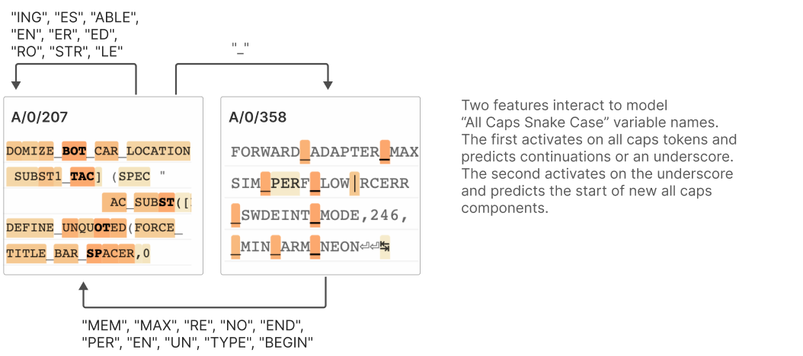
This type of two-node system is quite common for languages where Unicode characters are sometimes split into two tokens. (Again, with more feature splitting, these would expand into more complex systems.)
For example, Tamil Unicode characters (block U+0B80–U+0BFF) are typically split into two tokens. For example, the character "ண" (U+0BA3) is tokenized as \xe0\xae followed by \xa3. The first part (\xe0\xae or \xe0\xaf) roughly specifies the Unicode block, while the second component specifies the character within that block. Thus, it's natural for the model to alternate between two features, one for the Unicode prefix token, and one for the suffix token.
A more complex example is Chinese. While many common Chinese characters get dedicated tokens, many others are split. This is further complicated by Chinese characters being spread over many Unicode blocks, and those blocks being large and cutting across many logical blocks specified in terms of bytes. To understand the state machine the model implements to handle this, the key observation is that complete characters are similar to the "suffix" part of a split character: both can be followed by either a new complete character, or a new prefix. Thus, we observe two features, one of which fires on either complete characters or the suffix (predicting either a new complete character, or a prefix), while the other only fires on the prefixes and predicts suffixes.

Let's now consider a very simple four node system which models HTML. The "main path" through it is:
- A/0/20 fires on open tags and predicts tag names
- A/0/0 fires on tag names and predicts tag closes
- A/0/30 fires on tag closes and predicts whitespace
- A/0/494 fires on whitespace and predicts new tag opens.
A prototypical sample this might generate is something like <div>\n\t\t<span>.
The full system can be seen below:

Keep in mind that we're focusing on the A/0 features where this is very simple – if we looked at A/1, we'd find something much more complex! One particularly striking shortcoming of the A/0 features is that they don't describe what happens when A/0/0 emits a token like href, which leads to a more complex state.
It's important to note that these features can be quite contextual. There are several features related to IRC transcripts which form a totally different finite state automata like system:
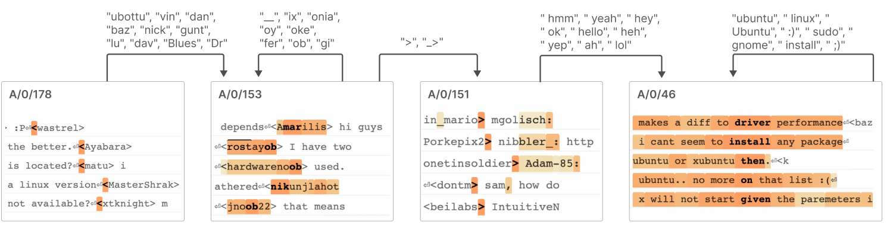
A prototypical sample this might generate is something like <nickonia_> lol ubuntu ;). Presumably the Pile dataset heavily represents IRC transcripts about linux.
One particularly interesting behavior is the apparent memorization of specific phrases. This can be observed only in runs with relatively large numbers of features (like A/4). In the following example, a sequence of features seem to functionally memorize the bolded part of the phrase MERCHANTABILITY or FITNESS FOR A PARTICULAR PURPOSE. This is a relatively standard legal language, and notably occurs in the file headers for popular open source software licenses, meaning the model likely saw it many times during training.

This seems like an example of the mechanistic theory of memorization we described in Henighan et al.
Related Work
Superposition and attempts to resolve it have deep connections to many lines of research, including general investigations of interpretable features, linear probing, compressed sensing, dictionary learning and sparse coding, theories of neural coding, distributed representations, mathematical frames, vector symbolic architectures, and much more. Rather than attempt to do justice to all these connections here, we refer readers to the related work section of Toy Models of Superposition
Superposition
Since we published Toy Models of Superposition there has been significant further work attempting to better understand superposition. We briefly summarize below.
Is superposition real? Gurnee et al.
When and why does superposition occur? Scherlis et al.
Memorization – In Henighan et al.
Disentanglement and Architectural Approaches
There is also a rich and related literature on disentanglement, which seeks to find representations of data that separate out (disentangle) conceptually-distinct phenomena influencing the data. In contrast to superposition, this work typically seeks to find a number of factors of variation or features which are equal to the dimensionality of the space being represented, whereas superposition seeks to find more.
This is often approached as an architecture/training-time problem. For instance, Kim & Mnih
Framed this way, some architectural approaches to superposition may also be understood as attempts at disentanglement. For instance, in Elhage et al.
Similarly, Jermyn et al.
These two examples of attempts to tackle superposition through architecture, and the challenges they encountered, highlight a key distinction between the problems of disentanglement and that of superposition: disentanglement fundamentally seeks to ensure that the dimensions in the model’s latent space are disentangled, whereas superposition hypothesizes that this disentanglement typically hurts performance (since success would require throwing away many features), and that models will typically respond to disentangling interventions by making some features more strongly entangled (as was found by both Mahinpei et al.
Dictionary Learning and Features
Our work builds on a longer tradition of using dictionary learning and sparse autoencoders to decompose neural network activations.
Early work in this space focused on word embeddings and other non-transformer neural networks. Faruqui et al.
More recently, a number of works have applied dictionary learning methods to transformer models. Yun et al.
At this point, our work in Toy Models
In their interim reports, Sharkey et al.
Discussion
Theories of Superposition
Coming into this work, our understanding of superposition was mostly informed by Toy Models
This work has persuaded us that our previous model was missing something crucial. At a minimum, features seem to clump together in higher density groups of related features. One explanation for this (considered briefly by Toy Models) is that the features may have correlated activations – firing together. Another – which we suspect to be more central – is that the features produce similar actions. The feature which fires on single digits in base64 predicts approximately the same set of tokens as the feature firing on other characters in base64, with the exception of other digits; these similar downstream effects manifest as geometrically close feature directions.
Moreover, it isn't clear that features need to be one-dimensional objects (encoding only some intensity). In principle, it seems possible to have higher-dimensional "feature manifolds" (see earlier discussion here).

These hypotheses are not mutually exclusive. The convex hull of several correlated features might be understood as a feature manifold. On the other hand, some manifolds would not admit a unique description in terms of a finite number of one-dimensional features. (Perhaps this accounts for the continued feature splitting observed above.)

Nevertheless, these experiments have left us more confident that some version of the superposition hypothesis (and the linear representation hypothesis) is true. The number of interpretable features found, the way activation level seems to correspond to "intensity" or "confidence," the fact that logit weights mostly make sense, and the observation of "interference weights": all of these observations are what you would expect from superposition.
Finally, we note that in some of these expanded theories of superposition, finding the "correct number of features" may not be well-posed. In others, there is a true number of features, but getting it exactly right is less essential because we "fail gracefully", observing the "true features" at resolutions of different granularity as we increase the number of learned features in the autoencoder.
Are "Token in Context" Features Real?
One of the most common motifs we found were "token-in-context" features. They also represent many of the features that emerge via feature splitting with increasing dictionary size. Some of these are intuitive – borrowing an example from
But why do we see hundreds of different features for "the" (such as "the" in Physics, as distinct from "the" in mathematics)? We also observe this for other common words (e.g. "a", "of"), and for punctuation like periods. These features are not what we expected to find when we set out to investigate one-layer models!
To make the question a bit more precise, it is helpful to borrow the language and examples of local vs compositional representations
- The underlying transformer uses a compositional code, and a quirk of our dictionary learning scheme produces features using a local code.
- The underlying transformer is genuinely using a local code (at least in part), and dictionary learning is correctly representing this.
If the former holds, then better dictionary learning schemes may help uncover a more compositional set of features from the same transformer. Local codes are sparser than compositional codes, and our L1 penalty may be pushing the model too far towards sparsity.
However, we believe the second hypothesis is likely to hold to some extent. Let's consider the example of "the" in Physics again, which predicts noun phrases in Physics: if the model represented "the" and Physics context independently, it would be forced to have logits be the sum of "upweight tokens which come after the" and "upweight tokens which occur in Physics". But the model might wish to have "sharper" predictions than this, which is only possible with a local code.
Future Work
Scaling Sparse Autoencoders. Scaling the application of sparse autoencoders to frontier models strikes us as one of the most important questions going forward. We're quite hopeful that these or similar methods will work – Cunningham et al.'s work
Scaling Laws for Dictionary Learning. It's worth noting that there's enormous uncertainty about the dynamics of scaling dictionary learning and sparse autoencoders discussed above. As we make the subject model bigger, how does the ideal expansion factor change? (Does it stay constant?) How does the necessary amount of data change? The resolution of these questions will determine whether it's possible for this approach, if executed well, to scale up to frontier models. Ideally, we'd like to have scaling laws
How Can We Recognize Good Features? One of the greatest challenges of this work is that we're "wandering in the dark" to some extent. We don't have a great, systematic way to know if we're successfully extracting high quality features. Automated interpretability
Scalability of Analysis. Suppose that sparse autoencoders fully solve superposition. Do we have a home run to fully mechanistically understanding models? It seems clear that there would be at least one other fundamental barrier: scaling analysis of models, so that we can turn microscopic insights into a more macroscopic understanding. Again, one approach here could be automated interpretability. But delegating the understanding of AI to AI may not be fully satisfying, for various reasons. It is possible that there may be other paths based on discovering larger scale structure (see discussion here).
Algorithmic Improvements for Sparse Autoencoders. New algorithms refining the sparse autoencoder approach could be useful. One might explore the use of variational autoencoders (e.g.,
Attentional Superposition? Many of the motivations for the presence of superposition in MLP layers
Theory of Superposition and Features. Many fundamental questions remain for our understanding of superposition, even if the hypothesis is right in some very broad sense. For example, as discussed above, this work suggests extensions of the superposition hypothesis covering clusters of features with similar effects, or continuous families of features. We believe there is important work to be done in exploring the theory of superposition further, perhaps through the use of toy models.
Comments & Replications
Inspired by the original Circuits Thread and Distill's Discussion Article experiment, the authors invited several external researchers who we had previously discussed our preliminary results with to comment on this work. Their comments are included below.
Replication & Tutorial
Neel Nanda is an external mechanistic interpretability researcher. This is a summary of a blog post replicating and extending this paper, with an accompanying tutorial to load some trained autoencoders and practice interpreting a feature.
The core results of this paper seem to replicate. I trained a sparse autoencoder on the MLP layer of an open source 1 layer GELU language model, and a significant fraction of the latent space features were interpretable.
I've open sourced two trained autoencoders and a tutorial for how to use them, and how to interpret a feature. I've also open sourced a (very!) rough training codebase, along with some of the implementation details that came up, and tips for training your own.
I investigated how sparse the decoder weights are in the neuron basis and find that they’re highly distributed, with 4% well explained by a single neuron, 4% well explained by 2 to 10, and the remaining 92% dense. I find this pretty surprising! Despite this, kurtosis shows the neuron basis is still privileged.
I also exhibit some case studies of the features I found, like a title case feature, and an "and I" feature
I didn’t find any dead features, but more than half of the features form an ultra-low frequency cluster (frequency less than 1e-4). Surprisingly, I find that this cluster is almost all the same feature (in terms of encoder weights, but not in terms of decoder weights). On one input 95% of these ultra rare features fired!
One question from this work is whether the encoder and decoder should be tied. I find that, empirically, the decoder and encoder weights for each feature are moderately different, with median cosine similarity of only 0.5, which is empirical evidence they're doing different things and should not be tied. Conceptually, the encoder and decoder are doing different things: the encoder is detecting, finding the optimal direction to project onto to detect the feature, minimising interference with other similar features, while the decoder is trying to represent the feature, and tries to approximate the “true” feature direction regardless of any interference.